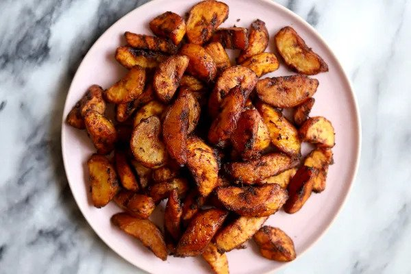

Kelewele

Description
West Africa boasts a wide selection of fried plantain recipes ranging from simple plantain chips to this mouth-watering Kelewele. Every country in Africa has its own range of fried plantains that are sold at every street corner, and even mainstream restaurants, any time of the day. This version goes under different aliases in Ghana is Kelewele and in Ivory Coast, it is known as Aloco.
Kelewele, or spicy fried plantains, are a favorite snack in the West African country of Ghana.
Ingredients
- 1 quart vegetable oil
- 1 small onion
- Ginger
- Cloves
- Ripe plantains
- Chile pepper
- Salt to taste
Steps
- Heat oil in a deep-fryer or large saucepan to 350 degrees F (175 degrees C).
- While the oil is heating, purée onion in a blender until smooth. Stir in ginger and cloves.
- Place plantains in a bowl and pour onion mixture over top. Add chile pepper and salt; mix until plantains are coated.
- Fry plantains in the hot oil until browned on all sides, about 5 minutes. Remove with a slotted spoon and drain on a paper towel-line plate.